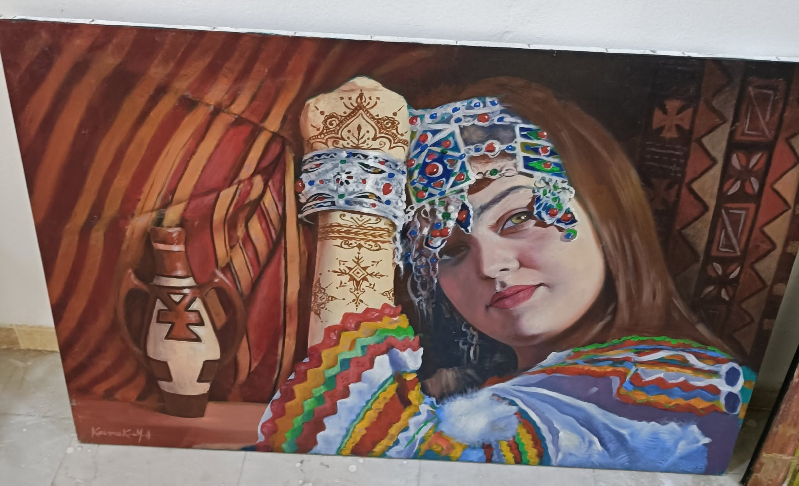

La dame d'étoffe et de hénné
Sous la toile rayée,
rouge et ocre ardent,
Où l'ombre d'une amphore
antique se tient,
Elle apparaît,
le regard brun,
perçant,
Portant l'héritage
d'un peuple ancien.
Sur son front,
le bandeau,
mosaïque de gemmes,
Miroir des ciels bleus
et des terres
rouges de feu,
Il chante
les secrets des tribus,
les poèmes,
Un diadème tissé,
éclatant et joyeux.
Son bras s'est levé,
geste de fierté,
Révélant le tracé
d'un hénné délicat,
Fleuraison éphémère
d'une beauté contée,
Un langage de signes
sur sa peau qui éclate.
Les anneaux
d'argent lourd,
gravés de patience,
Se joignent
aux chevrons
d'un habit coloré,
Témoin de la laine,
tressée avec aisance,
Où chaque couleur vibre
d'un passé sacré.
Elle est la grâce,
la force,
le mystère,
La gardienne
d'une Numidie fière
et lointaine.
Dans ses yeux brille
l'âme de la terre,
Beauté berbère,
toile sans fin.
Ce tableau murmure
les légendes du désert,
La douceur du foyer,
l'appel des montagnes.
La dame d'étoffe
nous offre son univers,
Dans le riche éclat
de ses franges
et ses couleurs.
Djamel Metref
At Yenni le 28 octobre 2025
Portrait © Kourak Mohamed Amine

← Tous les poèmes